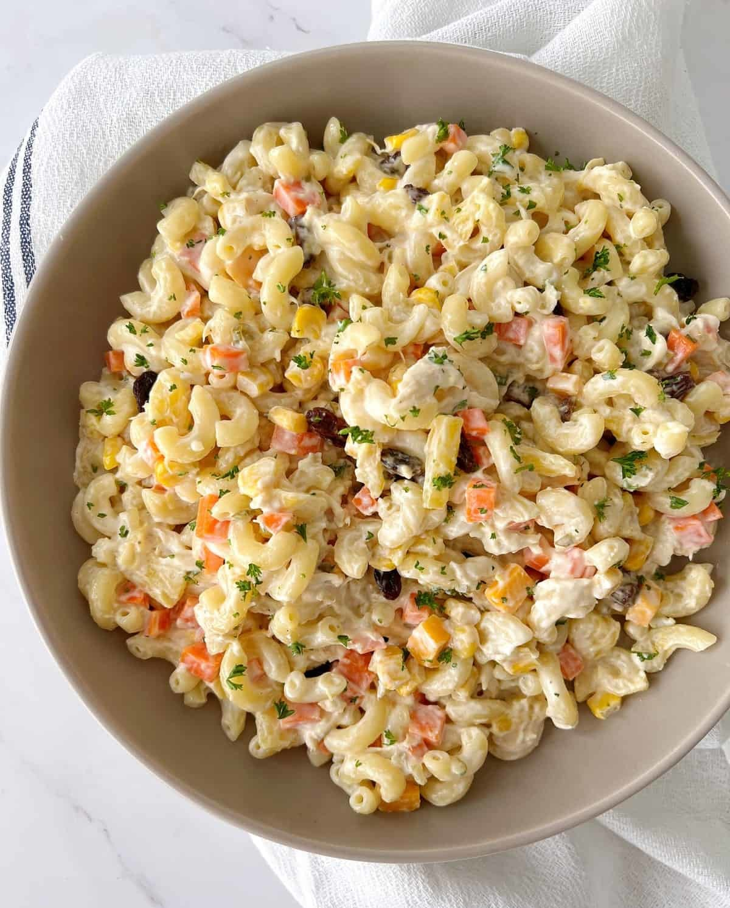

Macaroni Salad

Description
Macaroni salad is a classic, creamy side dish that’s perfect for picnics, barbecues, or as a quick, easy addition to any meal. Made with cooked elbow macaroni as the base, it’s typically mixed with a combination of crunchy vegetables like celery, onion, and bell peppers, all tossed in a smooth, tangy dressing. The dressing often consists of mayonnaise, mustard, vinegar, and a hint of sugar for balance, though variations may include sour cream or yogurt for added creaminess. For added flavor, ingredients such as hard-boiled eggs, pickles, or herbs like parsley are sometimes incorporated.
The versatility of macaroni salad allows for many customizations, making it easy to tailor to personal tastes. Whether kept simple or spruced up with extras like ham, cheese, or tuna, this dish always brings a refreshing balance of textures and flavors. Best served chilled, it is a comforting, crowd-pleasing dish that's easy to prepare in advance.
Ingredients
- 2 cups elbow macaroni (cooked and cooled)
- 1/2 cup mayonnaise
- 1 tablespoon mustard
- 1 tablespoon vinegar (apple cider or white)
- 1 teaspoon sugar
- 1/2 cup celery (chopped)
- 1/4 cup red onion (finely chopped)
- 1/4 cup bell pepper (chopped)
- Salt and pepper (to taste)
- Optional: hard-boiled eggs, pickles, parsley, or other desired add-ins
Steps
- Boil a pot of water and cook 2 cups of elbow macaroni according to the package instructions until tender (about 7–8 minutes).
- Drain and rinse under cold water to stop the cooking. Let the pasta cool completely.
- In a small bowl, whisk together 1/2 cup mayonnaise, 1 tablespoon mustard, 1 tablespoon vinegar, and 1 teaspoon sugar.
- Season with salt and pepper to taste, adjusting the balance of flavors if needed.
- In a large mixing bowl, combine the cooled macaroni, 1/2 cup chopped celery, 1/4 cup finely chopped red onion, and 1/4 cup chopped bell pepper. You can also add other ingredients like chopped hard-boiled eggs or pickles if desired.
- Pour the dressing over the macaroni and vegetables, stirring until everything is evenly coated. Taste and adjust the seasoning, if necessary.
- Cover the macaroni salad and refrigerate for at least 1 hour before serving to let the flavors meld. Serve chilled and enjoy!